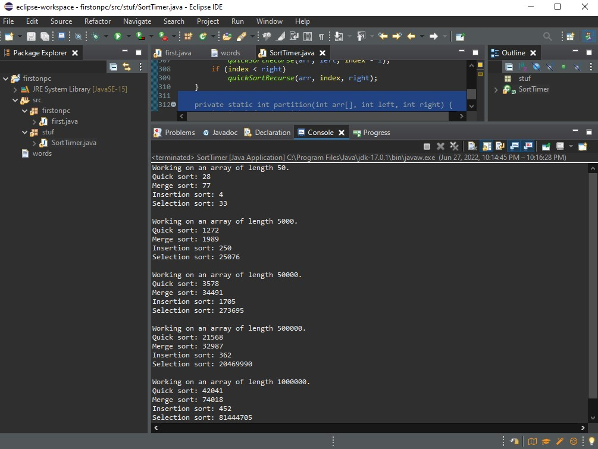

Sort Timer
This program times how long each sort takes, it isn't super advanced,
but does have some advanced aspects in it.

This is a program that takes the time it takes for each sort method to finish for each array, and then prints the time it took, and showcases knowledge on sorting algorithms. See result below

//Kearnan Bishop on Sunday, May 22nd, 2022
package stuf;
import java.util.Arrays;
import java.util.Random;
public class SortTimer {
// Please expand method main() to meet the lab requirements.
// You have the following sorting methods available:
// insertionSort(int[] a);
// selectionSort(int[] a);
// mergeSort(int[] a);
// quickSort(int[] a);
// The array will be in sorted order after the routines are called!
// Be sure to re-randomize the array after each sort.
public static void main(String[] args) {
// Create and initialize arrays
long quickSortDuration = 0;
long mergeSortDuration = 0;
long inSortDuration = 0;
long selSortDuration = 0;
int[] a = new int[50];
int[] b = new int[5000];
int[] c = new int[50000];
int[] d = new int[500000];
int[] e = new int[1000000];
// credit to https://www.tutorialspoint.com/generate-a-random-array-of-integers-in-java#:~:text=In%20order%20to%20generate%20random,this%20random%20number%20generator%20sequence.
Random rd = new Random();
for (int i = 0; i < a.length; i++) {
a[i] = rd.nextInt(101);
}
rd = new Random();
for (int i = 0; i < b.length; i++) {
b[i] = rd.nextInt(101);
}
rd = new Random();
for (int i = 0; i < c.length; i++) {
c[i] = rd.nextInt(101);
}
rd = new Random();
for (int i = 0; i < d.length; i++) {
d[i] = rd.nextInt(101);
}
rd = new Random();
for (int i = 0; i < e.length; i++) {
e[i] = rd.nextInt(101);
}
// Check the time to sort array a
long startTime = System.nanoTime();
quickSort(a);
long endTime = System.nanoTime();
long duration = (endTime - startTime) / 1000l;
quickSortDuration = duration;
System.out.println("Working on an array of length " + a.length + ".");
System.out.println("Quick sort: " + duration);
startTime = System.nanoTime();
mergeSort(a);
endTime = System.nanoTime();
duration = (endTime - startTime) / 1000l;
System.out.println("Merge sort: " + duration);
startTime = System.nanoTime();
insertionSort(a);
endTime = System.nanoTime();
duration = (endTime - startTime) / 1000l;
System.out.println("Insertion sort: " + duration);
startTime = System.nanoTime();
selectionSort(a);
endTime = System.nanoTime();
duration = (endTime - startTime) / 1000l;
System.out.println("Selection sort: " + duration);
System.out.println();
// b
startTime = System.nanoTime();
quickSort(b);
endTime = System.nanoTime();
duration = (endTime - startTime) / 1000l;
quickSortDuration = duration;
System.out.println("Working on an array of length " + b.length + ".");
System.out.println("Quick sort: " + duration);
startTime = System.nanoTime();
mergeSort(b);
endTime = System.nanoTime();
duration = (endTime - startTime) / 1000l;
System.out.println("Merge sort: " + duration);
startTime = System.nanoTime();
insertionSort(b);
endTime = System.nanoTime();
duration = (endTime - startTime) / 1000l;
System.out.println("Insertion sort: " + duration);
startTime = System.nanoTime();
selectionSort(b);
endTime = System.nanoTime();
duration = (endTime - startTime) / 1000l;
System.out.println("Selection sort: " + duration);
System.out.println();
// c
startTime = System.nanoTime();
quickSort(c);
endTime = System.nanoTime();
duration = (endTime - startTime) / 1000l;
quickSortDuration = duration;
System.out.println("Working on an array of length " + c.length + ".");
System.out.println("Quick sort: " + duration);
startTime = System.nanoTime();
mergeSort(c);
endTime = System.nanoTime();
duration = (endTime - startTime) / 1000l;
System.out.println("Merge sort: " + duration);
startTime = System.nanoTime();
insertionSort(c);
endTime = System.nanoTime();
duration = (endTime - startTime) / 1000l;
System.out.println("Insertion sort: " + duration);
startTime = System.nanoTime();
selectionSort(c);
endTime = System.nanoTime();
duration = (endTime - startTime) / 1000l;
System.out.println("Selection sort: " + duration);
System.out.println();
// d
startTime = System.nanoTime();
quickSort(d);
endTime = System.nanoTime();
duration = (endTime - startTime) / 1000l;
quickSortDuration = duration;
System.out.println("Working on an array of length " + d.length + ".");
System.out.println("Quick sort: " + duration);
startTime = System.nanoTime();
mergeSort(d);
endTime = System.nanoTime();
duration = (endTime - startTime) / 1000l;
System.out.println("Merge sort: " + duration);
startTime = System.nanoTime();
insertionSort(d);
endTime = System.nanoTime();
duration = (endTime - startTime) / 1000l;
System.out.println("Insertion sort: " + duration);
startTime = System.nanoTime();
selectionSort(d);
endTime = System.nanoTime();
duration = (endTime - startTime) / 1000l;
System.out.println("Selection sort: " + duration);
System.out.println();
// e
startTime = System.nanoTime();
quickSort(e);
endTime = System.nanoTime();
duration = (endTime - startTime) / 1000l;
quickSortDuration = duration;
System.out.println("Working on an array of length " + e.length + ".");
System.out.println("Quick sort: " + duration);
startTime = System.nanoTime();
mergeSort(e);
endTime = System.nanoTime();
duration = (endTime - startTime) / 1000l;
System.out.println("Merge sort: " + duration);
startTime = System.nanoTime();
insertionSort(e);
endTime = System.nanoTime();
duration = (endTime - startTime) / 1000l;
System.out.println("Insertion sort: " + duration);
startTime = System.nanoTime();
selectionSort(e);
endTime = System.nanoTime();
duration = (endTime - startTime) / 1000l;
System.out.println("Selection sort: " + duration);
System.out.println();
}
//
// ###############################################################
//
// Thanks to https://www.javatpoint.com/insertion-sort-in-java
public static void insertionSort(int array[]) {
int n = array.length;
for (int j = 1; j < n; j++) {
int key = array[j];
int i = j - 1;
while ((i > -1) && (array[i] > key)) {
array[i + 1] = array[i];
i--;
}
array[i + 1] = key;
}
}
// Thanks to
// http://www.java2novice.com/java-sorting-algorithms/selection-sort/
public static void selectionSort(int[] arr) {
for (int i = 0; i < arr.length - 1; i++) {
int index = i;
for (int j = i + 1; j < arr.length; j++)
if (arr[j] < arr[index])
index = j;
int smallerNumber = arr[index];
arr[index] = arr[i];
arr[i] = smallerNumber;
}
}
// Thanks to http://stackoverflow.com/questions/13727030/mergesort-in-java
public static void mergeSort(int[] A) {
if (A.length > 1) {
int q = A.length / 2;
// changed range of leftArray from 0-to-q to 0-to-(q-1)
int[] leftArray = Arrays.copyOfRange(A, 0, q - 1);
// changed range of rightArray from q-to-A.length to
// q-to-(A.length-1)
int[] rightArray = Arrays.copyOfRange(A, q, A.length - 1);
mergeSort(leftArray);
mergeSort(rightArray);
merge(A, leftArray, rightArray);
}
}
private static void merge(int[] a, int[] l, int[] r) {
int totElem = l.length + r.length;
// int[] a = new int[totElem];
int i, li, ri;
i = li = ri = 0;
while (i < totElem) {
if ((li < l.length) && (ri < r.length)) {
if (l[li] < r[ri]) {
a[i] = l[li];
i++;
li++;
} else {
a[i] = r[ri];
i++;
ri++;
}
} else {
if (li >= l.length) {
while (ri < r.length) {
a[i] = r[ri];
i++;
ri++;
}
}
if (ri >= r.length) {
while (li < l.length) {
a[i] = l[li];
li++;
i++;
}
}
}
}
// return a;
}
// Thanks to: http://www.algolist.net/Algorithms/Sorting/Quicksort
public static void quickSort(int arr[]) {
quickSortRecurse(arr, 0, arr.length-1);
}
private static void quickSortRecurse(int arr[], int left, int right) {
int index = partition(arr, left, right);
if (left < index - 1)
quickSortRecurse(arr, left, index - 1);
if (index < right)
quickSortRecurse(arr, index, right);
}
private static int partition(int arr[], int left, int right) {
int i = left, j = right;
int tmp;
int pivot = arr[(left + right) / 2];
while (i <= j) {
while (arr[i] < pivot)
i++;
while (arr[j] > pivot)
j--;
if (i <= j) {
tmp = arr[i];
arr[i] = arr[j];
arr[j] = tmp;
i++;
j--;
}
}
;
return i;
}
}